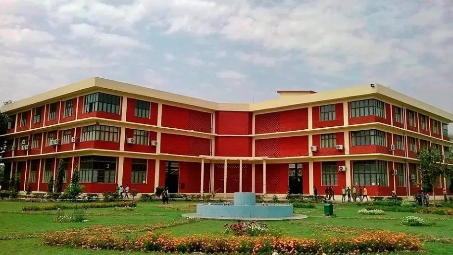

12th International Conference on Advancements and Futuristic Trends in Mechanical and Materials Engineering
The department’s long-running international conference brings researchers and industry together on materials, manufacturing and design. Call for papers and registration are open — details on the notice board.